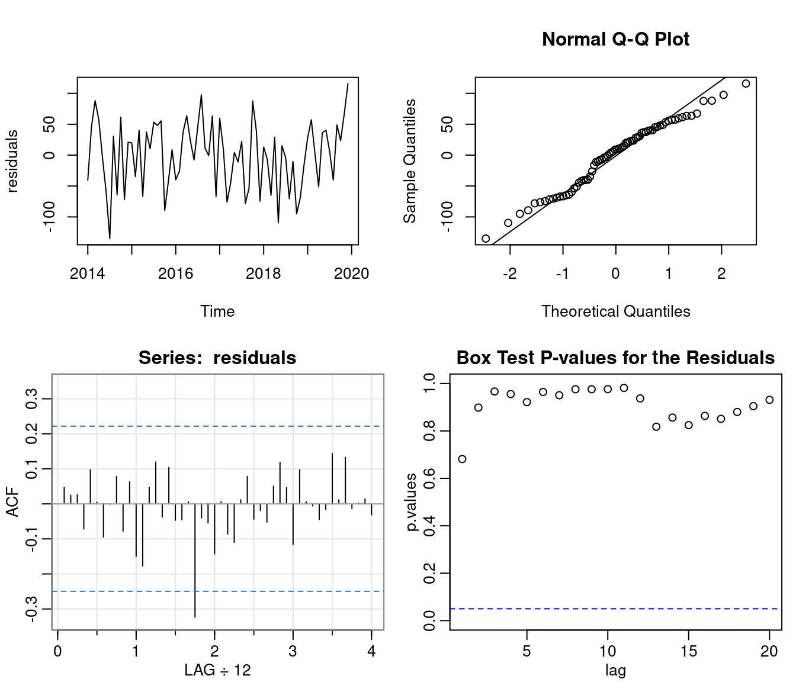

Time Series Analysis of Homicides in the US
Alex Cluff
4/20/2021
(last edit 2022-02-10 10:03:33)
Introduction
The data ranges from 2014 through 2019. Homicides are increasing over time with a parabolic trend. Seasonality appears to be yearly with large dips around January.
Trends, Seasonality, and ARMA Analysis
Estimating the Trend
Estimating the Seasonal Component
The seasonality is first estimated using monthly averages. Here they are after being estimated using a main effects regression model for the months such that \(y_t=s_t+z_t\) where \(y_t\) is the result of detrending the data and \(s_t=\hat{s_j}\) is the mean for month \(j=1,...12\).
## MJan MFeb MMar MApr MMay MJun MJul MAug MSep MOct
## 12.33 -247.49 -105.64 -84.27 51.10 64.65 152.54 93.43 28.00 22.58
## MNov MDec
## -5.16 17.93Fitting an ARMA model
The detrended, deseasonalized time series: \[ z_t=x_t-(\beta_0+\beta_1t+\beta_2t^2+s_t) \]
From the ACF plot it is evident that the trend is not a great fit. I would have fit a higher order polynomial, however, R can not fit anything over a second order polynomial. The second order polynomial also makes for a very bad prediction.
From the ACF graphs, I can see some correlation out to lag 3. After some testing, an AR(3,0) does fit the best.
##
## Call:
## arima(x = z, order = c(3, 0, 0))
##
## Coefficients:
## ar1 ar2 ar3 intercept
## 0.1691 0.2197 0.2866 6.3986
## s.e. 0.1173 0.1154 0.1192 18.8916
##
## sigma^2 estimated as 2935: log likelihood = -389.89, aic = 789.78The Model: \[ x_t = \phi_1x_{t-1}+\phi_2x_{t-2}+\phi_3x_{t-3}+w_t \] where, \[ \phi_1=0.169,~\phi_2=0.220,~\phi_3=0.287,~\text{and}~w_t\sim^{iid} N(6.399, 2935) \]

From these diagnostic plots we can see the the model is an acceptable fit besides the correlation around lag 2 in the residuals.
95% confidence interval:
## ar1 ar2 ar3 intercept
## lower -0.06092554 -0.006529079 0.05292215 -30.62897
## upper 0.39905895 0.445937975 0.52029038 43.42608Therefore, the final model is: \[ z_t=x_t-(-1.000632\times 10^{8}+9.9172141\times 10^{4}t+-24.572t^2+\hat{s_t}) \] \[ x_t = 0.169x_{t-1}+0.22x_{t-2}+0.287x_{t-3}+w_t, ~~ w_t \sim N(6.399,2935.034) \] Where \(t\) is month \(j=1,..,12\), \(\hat{s_t}\) is:
## MJan MFeb MMar MApr MMay MJun MJul MAug MSep MOct
## 12.33 -247.49 -105.64 -84.27 51.10 64.65 152.54 93.43 28.00 22.58
## MNov MDec
## -5.16 17.93SARIMA Modeling
Fitting the Model
ARIMA model: \[ (1-\phi_1B-\phi_2B^2)(1-B)(1-B^{12})x_t=(1+\theta_1B^{12})w_t \] such that: \[ (1+0.7173B+0.3790B^2)(1-B)(1-B^{12})x_t=(1+0.7089B^{12})w_t, ~~ w_t \sim^{iid} N(0,4702) \]
## $fit
##
## Call:
## arima(x = xdata, order = c(p, d, q), seasonal = list(order = c(P, D, Q), period = S),
## include.mean = !no.constant, transform.pars = trans, fixed = fixed, optim.control = list(trace = trc,
## REPORT = 1, reltol = tol))
##
## Coefficients:
## ar1 ar2 sma1
## -0.7173 -0.3790 -0.7089
## s.e. 0.1254 0.1257 0.2202
##
## sigma^2 estimated as 4702: log likelihood = -337.56, aic = 683.11
##
## $degrees_of_freedom
## [1] 56
##
## $ttable
## Estimate SE t.value p.value
## ar1 -0.7173 0.1254 -5.7225 0.0000
## ar2 -0.3790 0.1257 -3.0161 0.0038
## sma1 -0.7089 0.2202 -3.2198 0.0021
##
## $AIC
## [1] 11.57817
##
## $AICc
## [1] 11.58556
##
## $BIC
## [1] 11.71902This model fits quite well. The spike around lag 2 and the lower end of the Q-Q plot stand out, but do not look like a huge problem.
Prediction
This is a prediction for the next 24 months.

## $pred
## Jan Feb Mar Apr May Jun Jul Aug
## 2020 1675.143 1442.789 1579.335 1593.680 1740.108 1767.190 1851.684 1774.708
## 2021 1749.584 1501.415 1630.197 1656.105 1797.181 1823.720 1910.632 1832.127
## Sep Oct Nov Dec
## 2020 1735.190 1719.117 1702.715 1739.025
## 2021 1792.789 1777.166 1760.374 1796.794
##
## $se
## Jan Feb Mar Apr May Jun Jul
## 2020 69.02733 71.71663 77.28531 87.39357 91.97341 97.65345 103.55022
## 2021 137.68426 142.96222 148.82627 155.45543 160.84281 166.37141 171.84417
## Aug Sep Oct Nov Dec
## 2020 108.29493 113.22138 117.97420 122.38194 126.71824
## 2021 176.94911 181.99801 186.93381 191.68848 196.33372Comparing Models
Conclusion
Code
knitr::opts_chunk$set(echo = FALSE, fig.height=3.5, message=FALSE, warning=FALSE)
library(readr)
library(knitr)
library(astsa)
homicides <- ts(read_csv("deaths.csv"), start = 2014, frequency = 12)
plot(homicides, main = "Homicides Per Month (2014-2019)")
t <- time(homicides)
trend.coef <- lm(homicides ~ poly(t, 2, raw = TRUE))$coefficients
trend <- trend.coef[1] + trend.coef[2]*t + trend.coef[3]*t^2
plot(homicides, main = "Homicides Per Month with Trend")
lines(trend, col = "red", lty = 2)
detrended <- homicides - trend
plot(detrended, main = "Detrended")
abline(h = 0, col = "red", lty = 2)
M = factor(rep(month.abb, length.out = 72), levels = month.abb)
seasonal.means <- lm(detrended ~ M + 0)$coefficients
seasonality.ts <- ts(rep(seasonal.means, length.out = 72), start = 2014, frequency = 12)
round(seasonal.means, 2)
plot(detrended, ylab = "deaths", main = "detrended")
lines(seasonality.ts, col = "red", lty = 2)
z <- detrended - seasonality.ts
plot(z, ylab = "deaths", main = "detrended and desesonalized")
cf <- acf2(z)
model <- arima(z, order = c(3,0,0))
model
par(mfrow = c(2,2))
residuals <- model$residuals
plot(residuals)
qqnorm(residuals)
qqline(residuals)
acf <- acf1(residuals)
lag <- 1:20
lags <- as.list(lag)
p.values <- sapply(lags, function(x) Box.test(residuals, x, "Ljung-Box")$p.value)
plot(lag, p.values, ylim = c(0,1), main = "Box Test P-values for the Residuals")
abline(h=0.05, col = "blue", lty = 2)
lower = model$coef - 1.96 * sqrt(diag(model$var.coef))
upper = model$coef + 1.96 * sqrt(diag(model$var.coef))
rbind(lower,upper)
coef <- round(c(model$coef, model$sigma2),3)
round(seasonal.means, 2)
model.sarima <- sarima(homicides, 2, 1, 0, 0, 1, 1, 12, details = F)
model.sarima
residuals <- model.sarima$fit$residuals
par(mfrow = c(2,2))
plot(residuals)
qqnorm(residuals)
qqline(residuals)
acf <- acf1(residuals)
lag <- 1:35
lags <- as.list(lag)
p.values <- sapply(lags, function(x) Box.test(residuals, x, "Ljung-Box")$p.value)
plot(lag, p.values, ylim = c(0,1), main = "Box Test P-values for the Residuals")
abline(h=0.05, col = "blue", lty = 2)
sarima.for(homicides, 24, 2, 1, 0, 0, 1, 1, 12)
savehistory("C:/Users/AlexC/OneDrive/rws/5550/project/code.Rhistory")